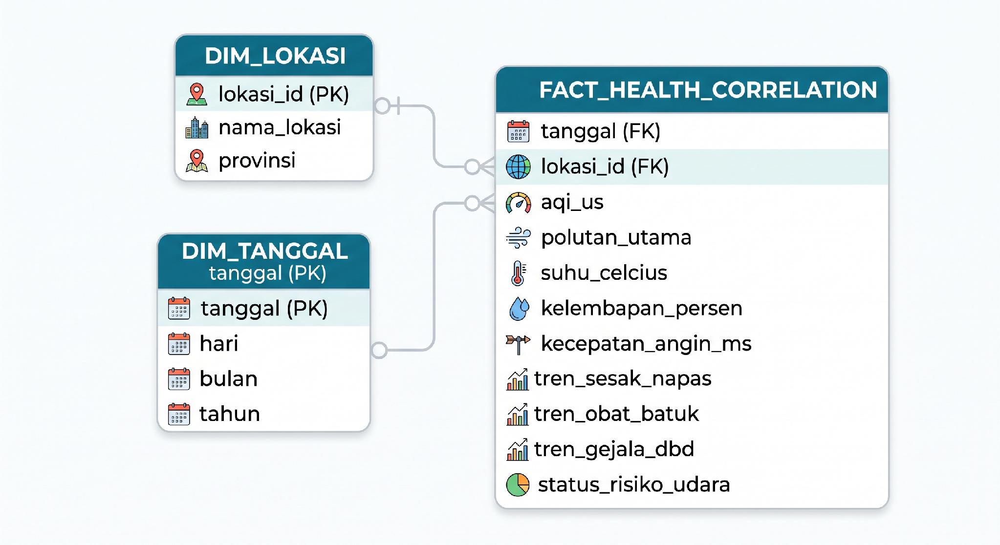
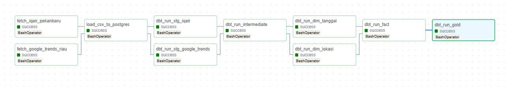
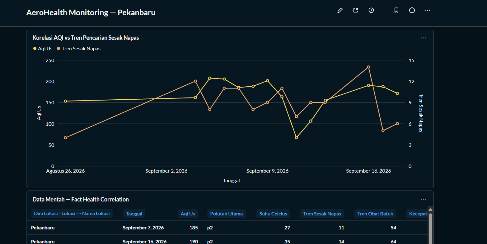

Volatile air quality
Pekanbaru's AQI changes rapidly due to weather and seasonal haze, but is rarely monitored alongside its possible impact on residents' health.
Hi, I'm Wahyudi — an Informatics graduate building practical data pipelines, from extraction and orchestration to transformation and visualization.
I'm an Informatics Engineering graduate with prior experience in office administration and IT support. My interest in data engineering grew from handling large volumes of data manually — I saw firsthand how much impact automation and structured data processes could have.
Building AeroHealth gave me the opportunity to work across the full data engineering lifecycle: extraction, orchestration, storage, transformation, and visualization, while exploring a problem with social relevance.
An end-to-end data pipeline that automatically collects air quality (AQI) data and respiratory symptom search trends every day, then combines them to explore whether worsening air quality is followed by a rise in symptom-related searches.
“When AQI in Pekanbaru worsens, do residents search more for respiratory symptoms online?”
Pekanbaru's AQI changes rapidly due to weather and seasonal haze, but is rarely monitored alongside its possible impact on residents' health.
Searches for symptoms such as shortness of breath and cough medicine can provide an additional signal that is not usually combined with air quality data.
AQI and search trend data come from separate sources, use different formats, and need to be unified reliably.
A repeatable process is needed to extract, store, clean, combine, and visualize the data without manual intervention.
Each stage is separated so components can be developed and operated independently.
IQAir API
Google Trends
Object storage
Daily CSV files
Raw tables
aerohealth_dwh
Staging →
Dimensional → Gold
Correlation
dashboard
Orchestrated by Apache Airflow 2.8.1 (LocalExecutor)
Runs inside Docker Compose and is scheduled automatically every day with @daily.
raw_iqair and raw_google_trends in PostgreSQL, with daily CSV files stored in the MinIO aerohealth-raw bucket.
Staging views, intermediate correlation model, and dimensional tables: dim_tanggal, dim_lokasi, and fact_health_correlation.
gold_health_correlation is a flattened table, pre-joined for direct use in the BI dashboard.
The fact table holds daily AQI, weather, and symptom search-trend metrics, with a grain of one row per date and location.

The DAG contains 10 tasks. Extraction and staging run in parallel per source, dimensions run in parallel per table, then the fact and Gold models run in sequence.

Extraction with pandas, requests, and pytrends.
Workflow orchestration using LocalExecutor.
Data warehouse and raw data tables.
Object storage for the raw zone.
Data transformation across three layers.
Dashboard and data visualization.
Containerization of project services.
Repeated manual triggers and Google Trends retrieving a 30-day window on each call caused duplicate rows. Addressed with AVG() aggregation per date in the intermediate layer.
IQAir's free tier cannot backfill historical data. Missing AQI is represented with an explicit “Weather Data Missing” label in status_risiko_udara.
Credentials were moved into environment variables in .env and are not committed to Git.
load_to_postgres.py only prints a warning when a CSV is missing. Airflow may still report success with zero rows loaded. This remains a reliability improvement priority.
Metabase dashboard based on the fact_health_correlation model, covering August 26 – September 18, 2026.

A rise in AQI visually tends to be followed by a rise in “shortness of breath” search trends a few days later.
The pattern appears clearest when AQI is above approximately 150, in the unhealthy category.
When AQI improves, search trends also appear to taper off.
These observations are not proof of a statistical relationship or causation. The pattern has not yet been tested with Pearson correlation; the historical sample is small, AQI is city-level while Trends is province-level, and other factors have not been controlled for.
The project evolved through mentor feedback and iterative improvements to the architecture and data model.
Migrate to cloud
Move workloads to GCP or AWS to reduce local resource usage.
Add dbt tests
Introduce not_null, unique, and relationships checks.
Add alerting
Notify when an Airflow task fails and address silent failures.
Expand to multi-city
Extend the location dimension beyond Pekanbaru.
Add data sources
Explore rainfall and real ISPA case data.
Formal statistical test
Calculate Pearson correlation when enough historical data is available.
Ready to learn, adapt, and contribute to data and technology projects.